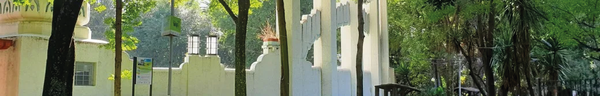
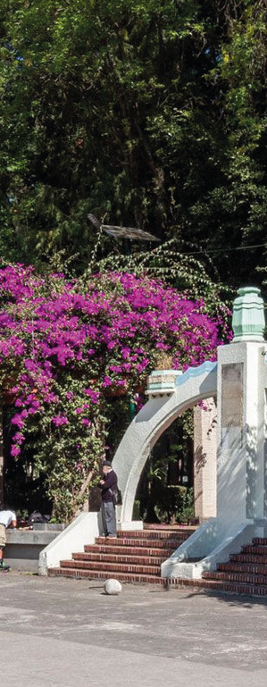
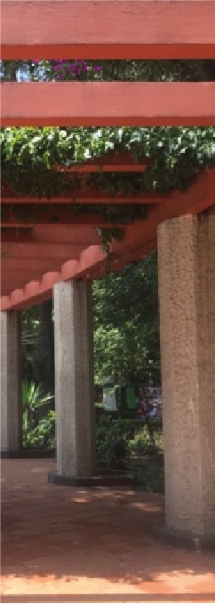
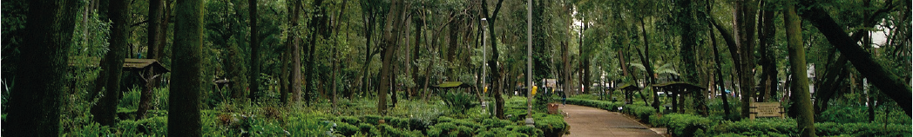

PARQUE MÉXICO

El Parque México es uno de los espacios urbanos y culturales más importantes de la colonia Hipódromo Condesa y uno de los parques más emblemáticos de la Ciudad de México. Fue inaugurado en 1927 como parte del proyecto urbano de modernización de la colonia Hipódromo, desarrollada sobre los antiguos terrenos del hipódromo del Jockey Club de México.
Antes de existir el parque, toda la zona pertenecía a la antigua Hacienda de la Condesa de Miravalle. A principios del siglo XX, el área era utilizada como hipódromo para carreras de caballos. Cuando el terreno fue urbanizado en los años 20, se decidió crear un gran parque central que funcionara como el corazón de la nueva colonia Hipódromo.
El arquitecto José Luis Cuevas Pietrasanta diseñó tanto el parque como gran parte del trazo urbano de la colonia. El diseño del parque conserva la forma elíptica inspirada en la antigua pista del hipódromo.
Originalmente el parque se llamó Parque General San Martín, en honor al libertador argentino José de San Martín, aunque con el tiempo comenzó a conocerse popularmente como “Parque México” debido a la Avenida México que lo rodea.
El Parque México es considerado uno de los mejores ejemplos del estilo Art Déco aplicado al urbanismo y paisaje en la CDMX. Fue uno de los primeros parques modernos diseñados arquitectónicamente en la ciudad.
Entre sus elementos arquitectónicos más importantes destacan:
🎭 Foro Lindbergh
Es el espacio más famoso del parque. Se trata de una gran plaza Art Déco con:
- anfiteatro,
- pérgolas,
- columnas monumentales,
- y esculturas decorativas.
El foro fue diseñado por el arquitecto Leonardo Noriega Stávoli y toma su nombre del aviador Charles Lindbergh.
⛲ Fuente de los Cántaros
Una de las esculturas más icónicas del parque. Representa a una mujer cargando dos cántaros de agua y fue creada por el escultor José María Fernández Urbina, reconocido también por restaurar el Ángel de la Independencia tras el sismo de 1957.
🌿 Diseño paisajístico
A diferencia de parques más antiguos como la Alameda Central, Parque México tiene senderos orgánicos y curvos inspirados en jardines europeos modernos. También cuenta con:
- estanques,
- fuentes,
- bancas decorativas,
- luminarias ornamentales,
- y abundante vegetación.
Naturaleza y urbanismo
El parque funciona como uno de los principales pulmones verdes de la Condesa y es famoso por sus:
- jacarandas,
- palmeras,
- áreas arboladas,
- y zonas pet friendly.
Además, muchas aves migratorias visitan el parque durante el año.


